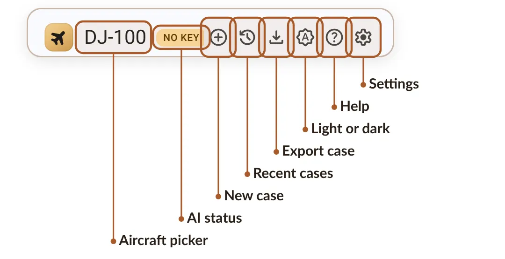
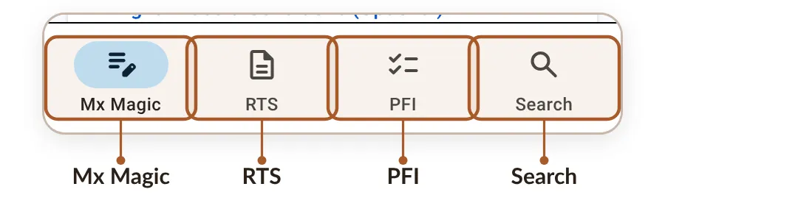
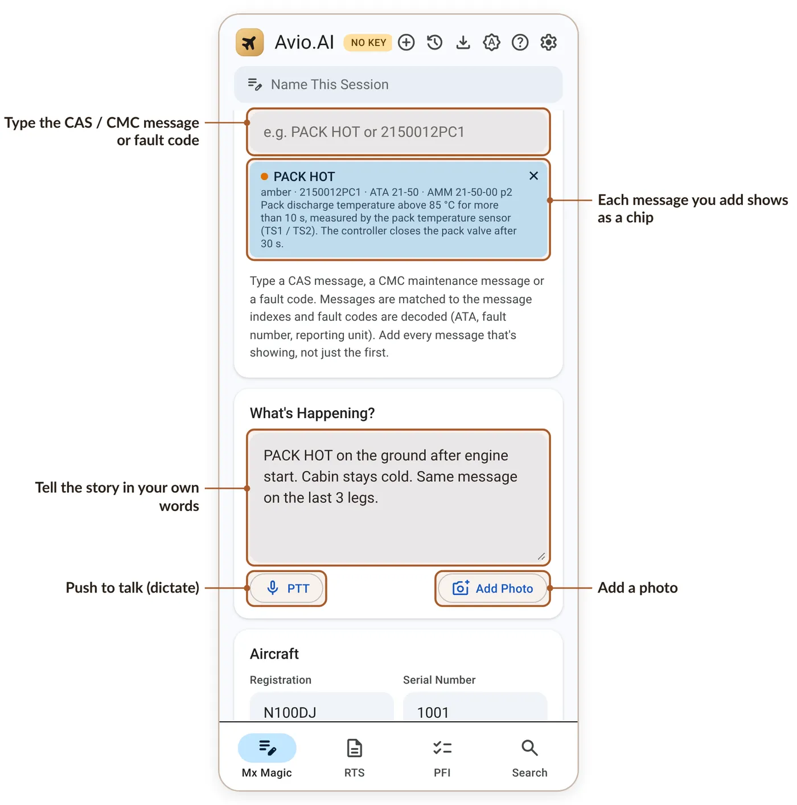

Avio.AI is a pocket maintenance helper. Tell it what the airplane is doing, and it digs through your company's own manuals for likely causes, tests, MEL relief and paperwork. It does the reading. You do the thinking, the wrenching and the signing.
The one rule: every answer has a citation. Tap it and check it. If the app and the manual disagree, the manual wins. Every time.
This is the short version. The full Avio.AI User Guide has every button explained, with pictures.
You need an iPhone or iPad (iOS 16 or later) and an invite link from your administrator. It's made in your name, works once, and expires after 7 days.
Adding a second phone or tablet? On the device you already use, open Settings → Sign In → Add Another Device. It shows a one-time code and a link you can send. On the new device, open the link in Safari (or enter the code under Sign In and tap Join With Code), then do steps 3 to 6 there.
Just looking around? Tap Try the Demo Aircraft. It's a made-up jet, so you can't break anything real.
Keys are like house keys. Don't text the API key, email it or tape it to the hangar fridge. Your passkey lives in your phone's keychain, and a used invite link opens nothing.
The top bar works on every tab:

The four tabs live along the bottom:

| Tab | Use It To… | Needs the AI Key? |
|---|---|---|
| Mx Magic | Tell the app what's wrong and start a troubleshooting case | Yes |
| WO (Work Order) | Follow every line item of a service-center visit or downtime: import the work order, update statuses, hours and cost, add items | To import or read a progress email |
| RTS (Return To Service) | Do a case's paperwork in one place: part swaps, discrepancy log, MEL deferral, log entries, repair tags and the PFI checklists | No (except checklist Import) |
| Search | Search the manuals, or flip the switch to Wiring for pin-outs and drawings | No |

Tap every citation. It opens the manual page so you can see it with your own eyes.
Your company's approved MEL always has the final say.
Swapped a part? On RTS, tap Add Component Transaction once for each part, then open its Log Entry (and repair tag, if your company uses one). No case open? Tap Start a Paperwork Case first.
Circuit breakers: tap Pulled when you pull one and Reset when it's back in. Tap Reset twice for MEL when an MEL action keeps it pulled. A yellow reminder stays on every tab until every breaker is reset. Pulling one that isn't on the list? Tap Add CB / SSPC for This Event.
Edit fixes a line on any checklist. Import turns your company's own inspection form (PDF) into a checklist, which you check and approve before anyone uses it.
| Problem | Quick Fix |
|---|---|
| The AI doesn't answer | Check the Anthropic API Key in Settings and your signal |
| "That invite code is not valid or has expired" | Invites work once, within 7 days. Ask your administrator for a new one |
| "This passkey is not registered with Avio.AI" | Ask your administrator for a new invite, then join again |
| The app asks for the API key every time | Use the Home Screen app, not Safari, and tick Remember keys on this device |
| A case is missing on this phone | Open Mx Magic History to pull the latest |
| Forgot how something works | Tap Help, then User Guide or Quick Start Guide |
| No signal at the airplane | Tap Download Data For Offline Use in Settings while on Wi-Fi |
| Something's broken or missing | Tap Help (the question mark in the top bar), then Send Feedback. It goes straight to the Avio.AI team |
Want the long version? The Avio.AI User Guide explains every button, with labeled pictures.